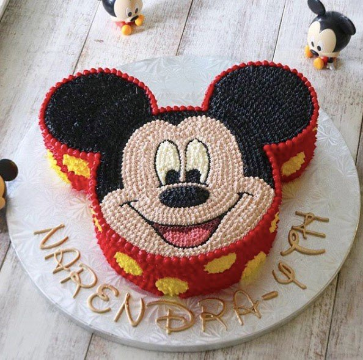
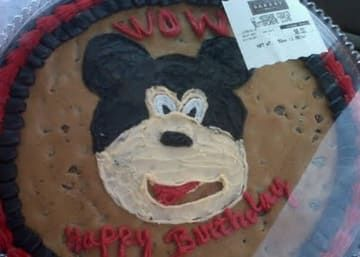

DIY Mickey Mouse Cake

Ingredients
For the cake
- 2 cups all-purpose flour, sifted (because even Mickey wouldn't tolerate lumpy flour)
- 1 1/2 cups granulated sugar, for sweetness that'll make you shout "Oh, boy!"
- 3/4 cup unsweetened cocoa powder, for a rich, dark chocolate flavor as deep as Mickey's voice
- teaspoon baking soda, to give the cake a lift, just like Mickey's positive attitude
- 1/2 teaspoon salt, a pinch of magic to balance the sweetness
- 1 cup buttermilk, for a moist and tender crumb like Mickey's big, soft ears
- 1/2 cup vegetable oil, to keep things smooth like Mickey's dance moves
- 2 large eggs, for binding and richness, because Mickey's cake deserves the best
- 1 teaspoon vanilla extract, a touch of magic to make the cake sing like a chorus of Mickeys
For the frosting
- 1 cup (2 sticks) unsalted butter, softened to the texture of Mickey's warm smile
- 3 cups powdered sugar, for sweetness that'll have you whistling "Heigh-Ho"
- 1/2 cup unsweetened cocoa powder, for a chocolatey depth that rivals Mickey's mysterious past
- 1/4 cup milk, for a smooth and creamy consistency like Mickey's velvety gloves
- 1 teaspoon vanilla extract, a sprinkle of pixie dust to make the frosting taste like a trip to Disneyland
For the decoration
- Black and white candy melts, for crafting Mickey's iconic features like a skilled Imagineer
- Red candy melts, for a splash of color that'll make your cake as cheerful as Mickey's laugh
- Round chocolate wafers, for Mickey's iconic ears, because who wants a Mickey Mouse cake without the ears?
- Sprinkles, because every Mickey Mouse cake deserves a sprinkle of magic (and because sprinkles are just plain fun)
Instructions
- Preheat your oven to 350°F (175°C) and grease two 9-inch round cake pans. Remember, a well-greased pan is a happy pan, and a happy pan makes a happy cake, just like a happy Mickey makes a happy world.
- In a large bowl, whisk together the flour, sugar, cocoa powder, baking soda, and salt. Imagine you're conducting an orchestra of dry ingredients, each playing its part in the symphony of deliciousness.
- In a separate bowl, whisk together the buttermilk, vegetable oil, eggs, and vanilla extract. This is the wet ingredient band, and they're ready to join the dry ingredient orchestra for a grand finale.
- Gradually add the wet ingredients to the dry ingredients, mixing until just combined. Don't overmix! You want a smooth and even batter, not a tough and overworked one. Remember, even Mickey takes breaks.
- Divide the batter evenly between the prepared cake pans and bake for 30-35 minutes, or until a toothpick inserted into the center comes out clean. While the cakes bake, imagine them transforming into Mickey
Enjoy your cake!

Go to Recipe list